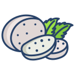

Indulge in the rich traditions of Tuscan cuisine with a curated selection of
artisanal cheeses from Fonte dei Serri, a family-run farm nestled in the heart of
Poppi, Tuscany.
Crafted with passion and time-honored methods, our cheeses—ranging from creamy robiola and
fresh caciotta to aged pecorino—bring the essence of the Italian countryside directly to your table.
Each bite offers a taste of our commitment to quality, sustainability, and
the vibrant flavors of our land.

Bold, fresh, unforgettable. Our fiordilatte mozzarella is the pride of
Fonte dei Serri—highly recommended by our team and adored by our clients.
There’s no comparison.
Try it once and you'll understand why.
Perfect for enhancing your meals or creating an exquisite cheese board, Fonte dei Serri
delivers a genuine farm-to-table experience right to your doorstep.
Each basket is priced at €60 and packed with flavor, care, and
tradition.
 Basket 1 – Tasting Experience
Basket 1 – Tasting Experience
A discovery box to explore the full range of fresh, soft,
and semi-aged cheeses.
Perfect for sharing at dinner or savoring solo.
Contents:
Basket 2 – Gift to Take Home Basket 3 – Rustic Weekend
Ideal for countryside escapes or seaside picnics with family and friends.
Fresh and semi-aged cheeses to enjoy over a few relaxing days.
Contents:
Basket 4 – Bold & Aged (For Cheese Lovers)
Intense flavors for true connoisseurs—aged, sharp, and unforgettable.
Perfect for aperitivo hour or a wine-soaked evening.
Contents:
by contacting him directly using the details below.
Tuesday afternoons (every other week) – near the Fiorentina football stadium.
Every Saturday morning – at the Sant'Ambrogio Market.
Every other Wednesday – at Porta Romana, around 12:00 PM.
Every Friday – in Piazza Tasso, from 3:30 PM to 7:15 PM.
Prefer delivery? Home delivery is available for an additional €13.